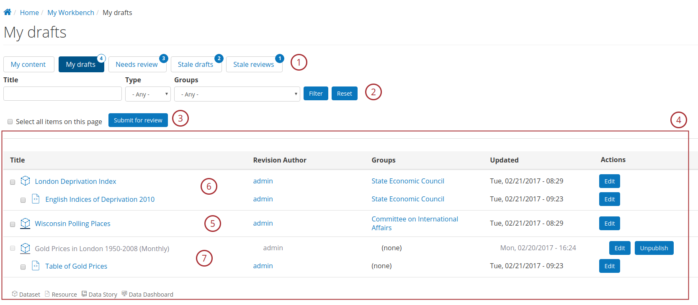
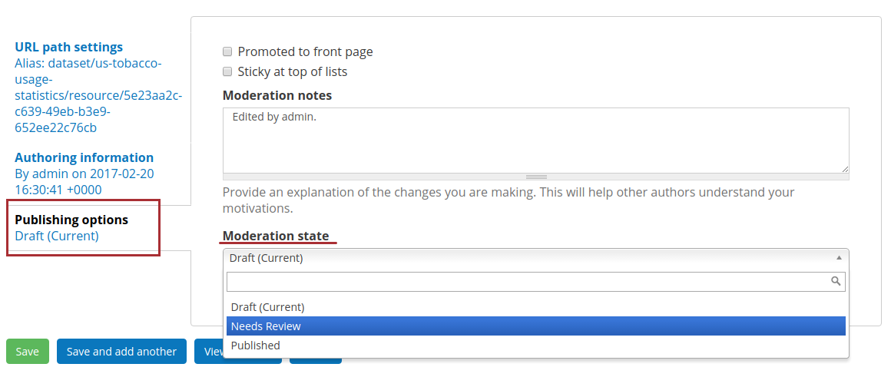

DKAN Workflow¶
DKAN Workflow is a Workflow implementation for DKAN based on the Workbench family of modules.
The goal of this component is help various organizations adhere to an editorial workflow for metadata publishing by providing:
- Content state tracking and revisioning
- State oriented management UI
- Access control
DKAN Workflow main administration interface.
Requirements¶
The DKAN workflow component comes in the form of three modules:
- DKAN Workflow
- DKAN Workflow Permissions
- Views Workflow List
In addition to these core modules, DKAN Workflow depends on multiple Drupal contrib modules
Outside of the direct Workbench add-ons, DKAN Workflow needs additional Drupal contrib modules to provide extra functionality (Menu and link badges, etc).
All those dependencies are declared in the drupal-org.make file.
Installation¶
DKAN workflow is included in the core DKAN install but it’s not enabled by default. It can be enabled either from the Modules management page or by using drush.
drush en dkan_workflow -y
Enabling DKAN workflow should enable all the dependencies modules and update the user roles (more information available in the Workflow Roles section).
Metadata Moderation States¶
There are three default moderations states available by default in DKAN:
| Draft: | This is the starter state that the metadata (be it dataset or resource) is in when first created by the “Workflow Contributor” ( defined in the Workflow Roles section). The node can be updated and have multiple iteration (or revision in the Drupal jargon) without the need to change the state. After the author evaluate the content is ready for being reviewed. The node moderation state can be set to “Needs Review”. |
|---|---|
| Needs Review: | When the content author consider the work to be good enough to be reviewed by a Moderator, the node(s) can be set to the Needs Review. This will signal to available “Workflow Moderator” users that the data is ready to be looked at by peers (more information in the Workflow Roles section). |
| Published: | When the content is judged being ready for public consumption. The qualified moderator (Take a look at the Workflow Roles section) can set it to the Published state. This will make the current revision of the metadata to be accessible by all the site visitor and the dataset/resources will be added to the search index. |
Content Moderation UI¶
Controlling the moderation state of the various core content types provided by DKAN can be done from various places.
My Workbench¶
The main moderation interface is available from the My Workbench link from the navigation bar, or accessible directly via admin/workbench.
Moderation Tabs.
My content: This tab is the only tab without the moderation table and provides quick links to content creation forms. My drafts: This will display the draft content authored by the logged in user. Needs review: This will display the content with the moderation state set to Needs Review depending on the Workflow role of the current user (This behavior is detailed in the Workflow Roles section). Stale drafts: This moderation tab is equivalent to My drafts tabs except that it holds all the draft content that was not updated in the last 72 hours. This tab is only accessible by Workflow Supervisor (see Workflow Roles). Stale reviews: This moderation tab is equivalent to Needs review tabs except that it holds all the Needs Review content that was not updated in the last 48 hours. This tab is only accessible by Workflow Supervisor (see Workflow Roles). Content Filters. Users can filter through the moderated content by Title, Type (Dataset, Resource, Data Story, etc), and Groups.
Bulk updates. Certain operations like publishing or rejection can be applied to all or a selected subset of the content available on the moderation tab.
Moderated content Table. The table will list all the moderated content relevant to the tab currently selected. Supports displaying dataset without resource or with all it’s resources published (5), moderated dataset with moderated child resource (6), and even child moderated resource(s) with published parent dataset (7).
Node Edit Page¶
Changing the moderation state for individual nodes (be it a dataset or a resource) is available via the node edit form at the bottom of the edit page under the Publishing options sidebar. Authors and reviewers can change the moderation state and add a note about the change via the Moderation notes text area.
Workflow Roles¶
DKAN workflow permissions provides 3 Drupal roles:
| Workflow Contributor: | |
|---|---|
| This is the lowest level role desgined with “Content Creator” users in mind, with access only to the workflow menu and limited set of admininstration pages. The only transitions granted for this role is from “Draft” to “Needs Review” and the opposite way from “Needs Review” to “Draft”. The only tabs available for the “Workflow Contributor” role are the “My Draft” tab and “Needs Review tab”. Accros all the tabs, a user with this role have access only to the content that was authored by him/her. | |
| Workflow Moderator: | |
| This is a more advanced role desgined for “Editor” role. In addition of all the capabilities of the “Workflow Contributor” role, A “Workflow Moderator” can move content from “Needs review” to “Published”. “Workflow Moderator” users have access to all the content that is associated to the same Groups that they belong to (checkout Organic Groups integration for more information). | |
| Workflow Supervisor: | |
| This is the role associated with “Site Manager” users. In addition to being able to view and act upon all the content available on all the tabs (more information available in the Organic Groups integration), this role is the only role that have access to the “Stale Drafts” and “Stale Review” tabs. | |
Automatic User Role Assignment¶
Users with only workflow roles won’t be able to do much in DKAN and need to be associated to its equivalent core role. The Roles form on the User edit page supports adding the suited core role when only a Workflow role is checked.
{kind=link}
Automatic core role assignment with workflow roles.
Organic Groups integration¶
Content viewing¶
| What a user will see | My drafts | Needs review |
|---|---|---|
| Workflow Contributor |
|
|
| Workflow Moderator |
|
|
| Workflow Supervisor |
|
|
Emails¶
For each state transition (for example from Draft to Needs Review, from Needs Review to Draft, etc) a set of users with workflow roles will be notified by an email notification. The users will be selected following those rules:
- Email original content author.
- Email “Workflow Moderators” that are members of a group that the content have been associated to.
- Email all “Workflow Supervisors”.
Emails will have the context triggering the notification with links to the updated content.
Extending DKAN Workflow¶
Tweaking the Email template¶
Changing the email template being sent when a moderation operation is applied can be done via the admin/config/workbench/email configuration page. For more in-depth documentation please Review the Workbench Modules Docs.
Workbench Modules Docs¶
For more advanced edge case writing custom code may be needed. For more information please refer to the workflow modules documentation.